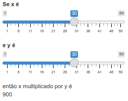
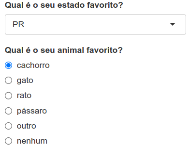
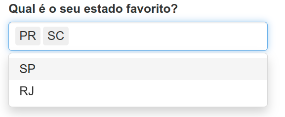
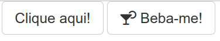
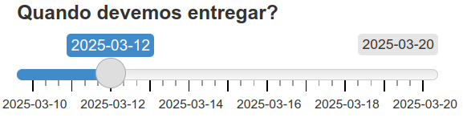
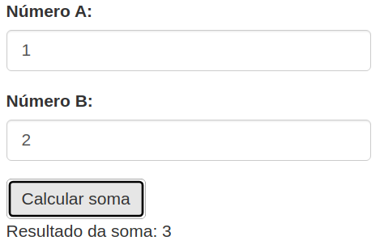
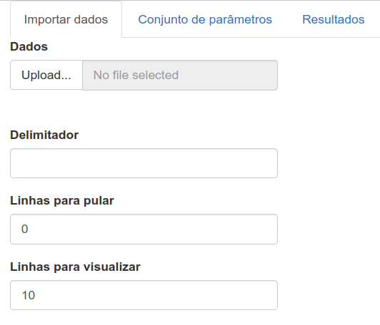
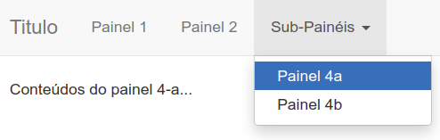

Capítulo 8 Shiny
8.1 Introdução ao Shiny
Para começar a trabalhar com Shiny, primeiro instale o pacote:
Para criar um novo app, salvar um script com a extensão .R, exemplo app.R. A partir disso, pode adicionar rapidamente o modelo do aplicativo digitando “shinyapp” e pressionando Shift+Tab.
A estrutura de um App Shiny, é composta de:
1. Interface do Usuário (UI): A UI define a aparência do aplicativo - o que o usuário vê e com o que interage.
2. Servidor (Server): O servidor contém a lógica do aplicativo - como ele responde às interações do usuário.
3. Função que combina ambos UI e Server: Para criar o aplicativo, combinamos a UI e o servidor com a função shinyApp(ui = ui, server = server)
RunApp: executa o aplicativo
Stop (no RStudio) ou fechar a janela do app: encerra o aplicativo
8.1.1 Adicionando controles de UI
library(shiny)
ui <- fluidPage(
selectInput("dataset", label = "Conjunto de Dados",
choices = ls("package:datasets")),
verbatimTextOutput("resumo"),
tableOutput("tabela")
)
server <- function(input, output, session) {
}
shinyApp(ui, server)fluidPage(): função de layout que define a estrutura visual básica da página.selectInput(): controle de entrada que permite ao usuário interagir com o aplicativo fornecendo um valor. Neste caso, é uma caixa de seleção com o rótulo “Conjunto de Dados” e permite escolher um dos conjuntos de dados que vêm com o R.verbatimTextOutput()etableOutput(): controles de saída que informam ao Shiny onde colocar a saída renderizada.verbatimTextOutput()exibe código etableOutput()tabelas.- Vemos apenas a entrada, não as duas saídas, porque ainda não informamos ao Shiny como a entrada e as saídas estão relacionadas.
8.1.2 Adicionando comportamento ao Server
library(shiny)
ui <- fluidPage(
selectInput("dataset", label = "Conjunto de Dados",
choices = ls("package:datasets")),
verbatimTextOutput("resumo"),
tableOutput("tabela")
)
server <- function(input, output, session) {
output$resumo <- renderPrint({
dataset <- get(input$dataset, "package:datasets")
summary(dataset)
})
output$tabela <- renderTable({
dataset <- get(input$dataset, "package:datasets")
dataset
})
}
shinyApp(ui, server)- Cada input e output na UI tem identificarodes (IDs). Chamando
input$IDeoutput$IDno servidor é a forma de identificar no shiny uma entrada e uma saída específica, com base no seu ID. output$ID: indica que você está fornecendo a receita para a saída do Shiny com esse ID.- Funções de renderização (render{Type}): encapsulam o código fornecido e conectam inputs e outputs.
- Cada função render{Type} é projetada para produzir um tipo específico de saída (texto, tabelas e gráficos) e geralmente é pareada com uma função {type}Output. Exemplo,
renderPrint()é pareado comverbatimTextOutput()erenderTable()é pareado comtableOutput().
Observações:
- O resumo e a tabela são atualizados sempre que você altera o conjunto de dados de entrada.
- Essa dependência é criada implicitamente, pois utilizamos
input$datasetnas funções de saída. input$dataseté preenchido com o valor atual do componente de interface do usuário com iddatasete fará com que as saídas sejam atualizadas automaticamente sempre que esse valor for alterado.- Essa é a essência da reatividade: as saídas reagem (recalculam) automaticamente quando suas entradas são alteradas.
8.1.3 Expressões Reativas
São usadas para evitar códigos duplicados. No exemplo anterior, o código a seguir é repetido 2 vezes.
Para criar uma expressão reativa:
Para chamar o seu valor, usamos: expressao_reativa().
A expressão reativa só é executada na primeira vez que é chamada e, em seguida, armazena o resultado em cache até que ele precise ser atualizado, deixando o código mais eficiente.
Atualizando o app com a expressão reativa:
library(shiny)
ui <- fluidPage(
selectInput("dataset", label = "Conjunto de Dados",
choices = ls("package:datasets")),
verbatimTextOutput("resumo"),
tableOutput("tabela")
)
server <- function(input, output, session) {
# Criando uma expressão reativa
dataset <- reactive({
get(input$dataset, "package:datasets")
})
output$resumo <- renderPrint({
# Chamando-a como uma função
summary(dataset())
})
output$tabela <- renderTable({
dataset()
})
}
shinyApp(ui, server)O aplicativo se comporta de forma idêntica, mas funciona um pouco mais eficientemente, pois só precisa recuperar o conjunto de dados uma vez, e não duas.
Exercícios - Seção 8.1
1. Crie um aplicativo que cumprimente o usuário pelo nome. Considerando as funções abaixo, organize e identifique quais delas serão necessárias para esta finalidade.
tableOutput("mortgage")
output$greeting <- renderText({
paste0("Hello ", input$name)
})
numericInput("age", "How old are you?", value = NA)
textInput("name", "What's your name?")
textOutput("greeting")
output$histogram <- renderPlot({
hist(rnorm(1000))
}, res = 96)2. Suponha que seu amigo queira criar um aplicativo que permita ao usuário definir um número (x) entre 1 e 50 e exiba o resultado da multiplicação desse número por 5. Esta é a primeira tentativa dele:
library(shiny)
ui <- fluidPage(
sliderInput("x", label = "If x is", min = 1, max = 50, value = 30),
"then x times 5 is",
textOutput("product")
)
server <- function(input, output, session) {
output$product <- renderText({
x * 5
})
}
shinyApp(ui, server)Mas infelizmente tem um erro. Você pode ajudá-lo a encontrar e corrigir o erro?
3. Expanda o aplicativo do exercício anterior para permitir que o usuário defina o valor do multiplicador, y, para que o aplicativo produza o valor de x * y. O resultado final deve ser semelhante a este:

4. Considere o aplicativo a seguir, que adiciona algumas funcionalidades adicionais ao aplicativo descrito no exercício anterior. O que há de novo? Como você poderia reduzir a quantidade de código duplicado no aplicativo usando uma expressão reativa?
library(shiny)
ui <- fluidPage(
sliderInput("x", "If x is", min = 1, max = 50, value = 30),
sliderInput("y", "and y is", min = 1, max = 50, value = 5),
"then, (x * y) is", textOutput("product"),
"and, (x * y) + 5 is", textOutput("product_plus5"),
"and (x * y) + 10 is", textOutput("product_plus10")
)
server <- function(input, output, session) {
output$product <- renderText({
product <- input$x * input$y
product
})
output$product_plus5 <- renderText({
product <- input$x * input$y
product + 5
})
output$product_plus10 <- renderText({
product <- input$x * input$y
product + 10
})
}
shinyApp(ui, server)5. No aplicativo a seguir, você seleciona um conjunto de dados de um pacote (usando o pacote ggplot2) e o aplicativo imprime um resumo e um gráfico dos dados. Ele também segue boas práticas e utiliza expressões reativas para evitar redundância de código. No entanto, há três bugs no código fornecido abaixo. Você consegue encontrá-los e corrigi-los?
library(shiny)
library(ggplot2)
datasets <- c("economics", "faithfuld", "seals")
ui <- fluidPage(
selectInput("dataset", "Dataset", choices = datasets),
verbatimTextOutput("summary"),
tableOutput("plot")
)
server <- function(input, output, session) {
dataset <- reactive({
get(input$dataset, "package:ggplot2")
})
output$summmry <- renderPrint({
summary(dataset())
})
output$plot <- renderPlot({
plot(dataset)
}, res = 96)
}
shinyApp(ui, server)
8.2 UI básica
A estrutura do UI (front-end) do shiny possibilita diferentes tipos de funções de entrada e saída que permitem capturar diversos tipos de dados e exibir diversos tipos de saída em R.
8.2.1 Entradas
Argumentos das funções de entrada:
inputId(primeiro argumento presente em todas as funções): Este é o identificador usado para conectar o front-end com o back-end. Se sua interface de usuário tiver uma entrada com ID “name”, a função do servidor a acessará cominput$name. OinputIdtem duas restrições:- Deve ser uma string simples contendo apenas letras, números e sublinhados. Deve ser nomeada como uma variável em R.
- Deve ser único.
label(segundo argumento presente na maioria das funções): usado para criar um rótulo legível para o controle.value(terceiro argumento): quando pesente, permite definir o valor padrão.
Principais funções de entrada do Shiny
1. Texto livre
Permite coletar pequenas quantidades de texto com textInput(), senhas com passwordInput() e parágrafos de texto com textAreaInput().
ui <- fluidPage(
textInput("name", "Qual é o seu nome?"),
passwordInput("password", "Qual é a sua senha?"),
textAreaInput("story", "Fale sobre você", rows = 3)
)
2. Entradas numéricas
Para valores numéricos: caixa de texto restrita com numericInput() ou um controle deslizante com sliderInput().
ui <- fluidPage(
numericInput("num", "Número um", value = 0, min = 0, max = 100),
sliderInput("num2", "Número dois", value = 50, min = 0, max = 100),
sliderInput("rng", "Intervalo", value = c(10, 20), min = 0, max = 100)
)
3. Datas
Para coletar um único dia: dateInput(); ou um intervalo de dias: dateRangeInput().
ui <- fluidPage(
dateInput("dob", "Quando você nasceu?"),
dateRangeInput("holiday", "Quando você quer tirar as próximas férias?")
)
4. Escolhas limitadas
Existem duas abordagens diferentes para permitir que o usuário escolha entre um conjunto pré-especificado de opções: selectInput() e radioButtons().
animais <- c("cachorro", "gato", "rato", "pássaro", "outro", "nenhum")
estados <- c("PR", "SC", "SP", "RJ")
ui <- fluidPage(
selectInput("estado", "Qual é o seu estado favorito?", estados),
radioButtons("animal", "Qual é o seu animal favorito?", animais)
)
Os botões de opção (
radioButtons()) têm dois recursos interessantes: eles mostram todas as opções possíveis, tornando-os adequados para listas curtas.Os menus suspensos (
selectInput()) ocupam a mesma quantidade de espaço, independentemente do número de opções, tornando-os mais adequados para opções mais longas.
Você também pode configurar multiple = TRUEpara permitir que o usuário selecione vários elementos.

5. Botões de ação
Para executar ações: actionButton() ou actionLink().
ui <- fluidPage(
actionButton("click", "Clique aqui!"),
actionButton("drink", "Beba-me!", icon = icon("cocktail"))
)
Links e botões de ação são mais naturalmente pareados com
observeEvent()oueventReactive()na sua função de servidor.Você pode personalizar a aparência usando o argumento
class“btn-primary”, “btn-success”, “btn-info”, “btn-warning”, ou “btn-danger”.Você também pode alterar o tamanho com “btn-lg”, “btn-sm”, “btn-xs”.
Por fim, você pode fazer com que os botões ocupem toda a largura do elemento em que estão incorporados usando “btn-block”.
ui <- fluidPage(
fluidRow(
actionButton("click", "Clique aqui!", class = "btn-danger"),
actionButton("drink", "Beba-me!", class = "btn-lg btn-success")
),
fluidRow(
actionButton("resp", "Respostas!", class = "btn-block")
)
)
Exercícios - Seção 8.2.1
1. Quando o espaço é limitado, é útil rotular as caixas de texto com um espaço reservado que aparece dentro da área de entrada de texto. Como você chamariatextInput() para gerar a IU abaixo?
2. Leia atentamente a documentação de sliderInput() e tente descobrir como criar um controle deslizante de data, conforme mostrado abaixo.

3. No seu aplicativo Shiny, crie um controle deslizante que permita ao usuário escolher um número entre 0 e 100, variando de 5 em 5. Em seguida, adicione uma funcionalidade de animação, de forma que, ao clicar em um botão de “play”, o controle avance automaticamente pelos valores disponíveis, como se estivesse passando por eles em sequência. Dica: existe um argumento do controle deslizante que permite ativar esse tipo de animação automaticamente.
4. Quando uma lista de opções em um menu suspenso (selectInput()) é muito longa, pode ser útil organizá-la em grupos com rótulos — como se fossem seções ou categorias dentro da lista. Explore como criar esse tipo de organização usando selectInput() no Shiny. Crie um exemplo com pelo menos dois grupos e algumas opções dentro de cada grupo (como o exemplo a seguir).

8.2.2 Saídas
As saídas na UI criam espaços reservados que são posteriormente preenchidos pela função do servidor.
Assim como as entradas, as saídas recebem um ID exclusivo como primeiro argumento. Se a sua especificação de UI criar uma saída com ID “plot”, você a acessará na função do servidor com
output$plot.Cada função de output no front-end (UI) é acoplada a uma função de renderização no back-end (server).
1. Texto
Produza texto com textOutput() e código fixo com verbatimTextOutput().
library(shiny)
ui <- fluidPage(
textOutput("texto"),
verbatimTextOutput("code")
)
server <- function(input, output, session) {
output$texto <- renderText({
"Olá, bem vindo! A seguir um resumo de dados:"
})
output$code <- renderPrint({
summary(1:10)
})
}
shinyApp(ui, server)Observe que há duas funções de renderização que se comportam de maneira ligeiramente diferente:
renderText()combina o resultado em uma única string e geralmente é emparelhado comtextOutput().renderPrint()imprime o resultado, como se você estivesse em um console R, e geralmente é pareado comverbatimTextOutput().
ui <- fluidPage(
textOutput("texto"),
verbatimTextOutput("print")
)
server <- function(input, output, session) {
output$texto <- renderText("Texto com renderText.")
output$print <- renderPrint(cat("Texto com renderPrint."))
}2. Tabelas
Há duas opções para exibir quadros de dados em tabelas:
tableOutput()erenderTable()renderizam uma tabela estática de dados, mostrando todos os dados de uma só vez. Útil para resumos pequenos e fixos.dataTableOutput()erenderDataTable()renderizam uma tabela dinâmica. É mais apropriado se você deseja expor um quadro de dados completo ao usuário.
ui <- fluidPage(
tableOutput("statica"),
dataTableOutput("dinamica")
)
server <- function(input, output, session) {
output$statica <- renderTable(head(mtcars))
output$dinamica <- renderDataTable(mtcars,
options = list(pageLength = 5))
}Versões mais recentes sugerem usar DTOutput e renderDT do pacote DT para tabelas dinâmicas.
library(shiny)
library(DT)
ui <- fluidPage(
tableOutput("statica"),
DTOutput("dinamica")
)
server <- function(input, output, session) {
output$statica <- renderTable(head(mtcars))
output$dinamica <- renderDT(mtcars,
options = list(pageLength = 5))
}
shinyApp(ui, server)3. Gráficos
Você pode exibir qualquer tipo de gráfico R (basico, ggplot2, etc) com plotOutput() e renderPlot().
ui <- fluidPage(
plotOutput("plot", width = "400px")
)
server <- function(input, output, session) {
output$plot <- renderPlot(plot(1:5), res = 96)
}Por padrão,
plotOutput()ocupará toda a largura do contêiner e terá 400 pixels de altura. Você pode substituir esses padrões com os argumentos height e width.Recomenda-se sempre definir
res = 96, pois isso fará com que seus gráficos correspondam o máximo possível ao que você vê no RStudio.Os gráficos são especiais porque são saídas que também podem atuar como entradas.
plotOutput()possui vários argumentos comoclick,dblclickehover. Se passar uma string para eles, comoclick = "plot_click", eles criarão uma entrada reativa (input$plot_click) que você pode usar para manipular a interação do usuário no gráfico, por exemplo, clicando no gráfico.
Exercícios - Seção 8.2.2
1. As funções textOutput() e verbatimTextOutput() devem ser pareadas com qual(is) função(ões) de renderização abaixo:
renderPrint(summary(mtcars))renderText("Good morning!")renderPrint(t.test(1:5, 2:6))renderText(str(lm(mpg ~ wt, data = mtcars)))
2. Recrie o aplicativo a seguir, definindo a altura como 300px e a largura como 700px.
library(shiny)
ui <- fluidPage(
plotOutput("plot", width = "400px")
)
server <- function(input, output, session) {
output$plot <- renderPlot(plot(1:5), res = 96)
}
shinyApp(ui, server)3. Atualize o código abaixo para que a tabela exiba apenas os dados e o controle de paginação, removendo os controles de busca e ordenação por colunas. Para isso, use os argumentos adequados para options da função renderDataTable(). Consulte a ajuda da função renderDataTable (?renderDataTable) e a documentação oficial do DataTables para entender como desativar esses controles:
https://datatables.net/reference/option/
8.3 Reatividade básica
8.3.1 A função do servidor
As funções de servidor recebem três parâmetros: input, output e session. Como você nunca chama a função de servidor, nunca criará esses objetos. Em vez disso, eles são criados pelo Shiny quando a sessão inicia, conectando-se a uma sessão específica. Vamos ver algumas formas de evitar erros envolvendo inputs e outputs.
Entradas (input)
O input é um objeto em forma de lista que contém todos os dados de entrada enviados pelo navegador, nomeados de acordo com o ID de entrada. Por exemplo, se sua interface contiver um controle de entrada numérico com um ID count, então você pode acessar o valor dessa entrada com input$count.
Inicialmente, ele conterá o valor 100 e será atualizado automaticamente conforme o usuário altera o valor no navegador.
Ao contrário de uma lista típica, objetos de input são somente leitura. Se você tentar modificar uma entrada dentro da função do servidor, receberá um erro:
server <- function(input, output, session) {
input$count <- 10
}
shinyApp(ui, server)
#> Error: Can't modify read-only reactive value 'count'Este erro ocorre porque input reflete o que está acontecendo no navegador, e o navegador é a “única fonte de verdade” do Shiny.
Além disso, para ler um input no servidor é necessário estar em um contexto reativo criado por uma função como renderText() ou reactive(). Isso permite que as saídas sejam atualizadas automaticamente quando uma entrada muda. Este código ilustra o erro que você verá se cometer este erro:
Saídas (output)
A saída (output) também é um objeto do tipo lista, nomeado de acordo com o ID de saída. A principal diferença é que você o usa para enviar saída em vez de receber entrada. Você sempre usa o objeto output em conjunto com uma função render.
ui <- fluidPage(
textOutput("greeting")
)
server <- function(input, output, session) {
output$greeting <- renderText("Hello human!")
}Assim como o input, o output é exigente quanto à forma como você o utiliza. Você receberá um erro se:
- Esquecer a função
render.
server <- function(input, output, session) {
output$greeting <- "Hello human"
}
shinyApp(ui, server)
#> Error: Unexpected character object for output$greeting
#> ℹ Did you forget to use a render function?- Tentar ler uma saída.
8.3.2 Programação reativa
Um aplicativo será bem chato se tiver apenas entradas ou apenas saídas. A verdadeira magia do Shiny acontece quando você tem um aplicativo com ambos.
library(shiny)
ui <- fluidPage(
textInput("name", "What's your name?"),
textOutput("greeting")
)
server <- function(input, output, session) {
output$greeting <- renderText({
paste0("Hello ", input$name, "!")
})
}
shinyApp(ui, server)Se você executar o aplicativo verá que a saudação é atualizada automaticamente conforme você digita. Esta é a grande ideia do Shiny: você não precisa informar a saída quando atualizar, porque o Shiny descobre isso automaticamente para você.
Um dos pontos fortes da programação em Shiny é que ela permite que os aplicativos sejam extremamente preguiçosos. Um aplicativo Shiny só fará o mínimo de trabalho necessário para atualizar os controles de saída. Essa preguiça, no entanto, tem uma desvantagem importante. O que há de errado com o código abaixo?
library(shiny)
ui <- fluidPage(
textInput("name", "What's your name?"),
textOutput("greeting")
)
server <- function(input, output, session) {
output$greting <- renderText({
paste0("Hello ", input$name, "!")
})
}
shinyApp(ui, server)Se você observar atentamente, poderá notar que está escrito greting em vez de greeting. Isso não gerará um erro no Shiny, mas não fará o que você deseja. A saída greting não existe, então o código em renderText() nunca será executado.
Importante: Verificar se sua interface de usuário e funções de servidor estão usando os mesmos nomes de identificadores.
O Gráfico Reativo
O gráfico reativo é uma representação gráfica que descreve como as entradas e saídas estão conectadas. Ele define a ordem de execução do aplicativo.
Para o exemplo:
library(shiny)
ui <- fluidPage(
textInput("name", "What's your name?"),
textOutput("greeting")
)
server <- function(input, output, session) {
output$greeting <- renderText({
paste0("Hello ", input$name, "!")
})
}
shinyApp(ui, server)O gráfico reativo fica:

O gráfico reativo contém um símbolo para cada entrada e saída, e conectamos uma entrada a uma saída sempre que a saída acessa a entrada. Este gráfico informa que greeting precisará ser recomputado sempre que name for alterado. Frequentemente descreveremos essa relação como greeting tendo uma dependência reativa em name.
O gráfico reativo é uma ferramenta poderosa para entender como seu aplicativo funciona. À medida que seu aplicativo se torna mais complexo, muitas vezes é útil fazer um esboço rápido e detalhado do gráfico reativo para lembrar como todas as peças se encaixam.
No caso do código envolver expressões reativas, esta informação também deve ser adicionada ao gráfico reativo.
Exemplo:
library(shiny)
ui <- fluidPage(
textInput("name", "What's your name?"),
textOutput("greeting")
)
server <- function(input, output, session) {
string <- reactive(paste0("Hello ", input$name, "!"))
output$greeting <- renderText(string())
}
shinyApp(ui, server)Neste caso, o gráfico reativo fica:

Uma expressão reativa é desenhada com ângulos em ambos os lados porque conecta entradas a saídas.
Exercícios - Seção 8.3.2
1. Dada esta UI:
Corrija os erros encontrados em cada uma das três funções de servidor abaixo. Primeiro, tente identificar o problema apenas lendo o código; depois, execute o código para garantir que o corrigiu.
server1 <- function(input, output, server) {
input$greeting <- renderText(paste0("Hello ", name))
}
server2 <- function(input, output, server) {
greeting <- paste0("Hello ", input$name)
output$greeting <- renderText(greeting)
}
server3 <- function(input, output, server) {
output$greting <- paste0("Hello", input$name)
}2. Desenhe o gráfico reativo para cada função de servidor a seguir:
server1 <- function(input, output, session) {
c <- reactive(input$a + input$b)
e <- reactive(c() + input$d)
output$f <- renderText(e())
}
server2 <- function(input, output, session) {
x <- reactive(input$x1 + input$x2 + input$x3)
y <- reactive(input$y1 + input$y2)
output$z <- renderText(x() / y())
}
server3 <- function(input, output, session) {
d <- reactive(c() ^ input$d)
a <- reactive(input$a * 10)
c <- reactive(b() / input$c)
b <- reactive(a() + input$b)
}3. Por que esse código falhará?
library(shiny)
df <- mtcars
ui <- fluidPage(
selectInput("var", NULL, choices = colnames(df)),
verbatimTextOutput("debug")
)
server <- function(input, output, session) {
var <- reactive(df[[input$var]])
range <- reactive(range(var(), na.rm = TRUE))
output$debug <- renderPrint({ range() })
}
shinyApp(ui = ui, server = server)Por que range() e var() são nomes ruins para reativos? Apresente o código corrigido.


8.3.3 observeEvent() e eventReactive()
No Shiny, observeEvent() e eventReactive() são funções essenciais para controlar a reatividade com base em eventos específicos (como cliques em botões, mudanças em inputs, etc.). Elas têm finalidades diferentes, embora ambas respondam a eventos.
observeEvent(): Executa código sem retorno de valor reativo e é útil para efeitos colaterais (ex: atualizar valores, mostrar mensagens, salvar arquivos).
Sintaxe:
Exemplo:
library(shiny)
ui <- fluidPage(
actionButton("meu_botao", "Clique aqui")
)
server <- function(input, output, session) {
observeEvent(input$meu_botao, {
print("O botão foi clicado!")
})
}
shinyApp(ui, server)eventReactive(): Cria um objeto reativo que só é atualizado quando um evento ocorre. Ideal para realizar cálculos pesados ou demorados apenas quando necessário (como ao clicar num botão).
Sintaxe:
Exemplo:
library(shiny)
ui <- fluidPage(
numericInput("n", "Número:", value = 5),
actionButton("calc", "Calcular quadrado"),
verbatimTextOutput("resultado")
)
server <- function(input, output, session) {
quadrado <- eventReactive(input$calc, {
input$n^2
})
output$resultado <- renderText({
paste("Resultado:", quadrado())
})
}
shinyApp(ui, server)Exercícios - Seções 8.1 a 8.3
1. Encontre e corrija o(s) erro(s) dos códigos a seguir:
a.
library(shiny)
ui <- fluidPage(
textInput("nome", "Seu nome:"),
textOutput("mensagem")
)
server <- function(input, output, session) {
output$frase <- renderText({
paste("Olá", input$nome)
})
}
shinyApp(ui, server)b.
library(shiny)
ui <- fluidPage(
numericInput("x", "Número:", value = 1),
textOutput("mensagem")
)
server <- function(input, output, session) {
output$mensagem <- renderPlot({
paste("O valor é", input$x)
})
}
shinyApp(ui, server)c.
library(shiny)
ui <- fluidPage(
numericInput("x", "Número:", value = 5)
)
server <- function(input, output, session) {
output$resultado <- renderText({
paste("Dobro:", 2 * input$x)
})
}
shinyApp(ui, server)d.
library(shiny)
ui <- fluidPage(
numericInput("a", "Número A", value = 0),
numericInput("b", "Número B", value = 0),
textOutput("soma")
)
server <- function(input, output, session) {
soma <- reactive({
input$a + input$b
})
output$soma <- renderText({
paste("A soma é:", soma)
})
}
shinyApp(ui, server)e.
library(shiny)
ui <- fluidPage(
numericInput("a", "Número A", value = 0),
numericInput("b", "Número B", value = 0),
textOutput("soma")
)
server <- function(input, output, session) {
soma <- reactive({
input$a + input$b
})
renderText({
paste("A soma é:", soma())
})
}
shinyApp(ui, server)2. Crie um app com:
textInput()para um nome,selectInput()para escolher uma comida favorita,- Um
textOutput()que exibe algo como: “Olá [nome], sua comida favorita é [comida].”

3. Crie um app com:
- Dois
numericInput()(números a e b), - Um botão (
actionButton(“calcular”)), - Um
textOutput()com a soma de a + b, somente após clicar.
Dica: Use eventReactive().

4. Crie um app com:
- Um
sliderInput()para escolher o número de bins (ex: de 5 a 50), - Um
plotOutput()com um histograma da distribuiçãornorm(100), - O gráfico deve atualizar automaticamente conforme o slider muda.
Dica: Use renderPlot().

5. Crie um app com:
- Um botão
(actionButton())para gerar, quando clicado, 100 números aleatórios(rnorm(100)), - Um
plotOutput()com o histograma desses números, - O gráfico só deve mudar quando o botão for clicado.
Dica: Use eventReactive().

8.4 Layout, temas, HTML
O Shiny fornece diversas funções para organizar a aparência dos aplicativos.
8.4.1 Layouts
Funções de página
- O
fluidPage()configura todo o HTML, CSS e JavaScript que o Shiny precisa. - Além de
fluidPage(), o Shiny oferece outras funções de página que podem ser úteis em situações mais especializadas:fixedPage()efillPage(). fixedPage()funciona como fluidPage(), mas tem uma largura máxima fixa, o que impede que seus aplicativos fiquem excessivamente largos em telas maiores.fillPage()Preenche toda a altura do navegador e é útil se você quiser criar um gráfico que ocupe a tela inteira.
1. Layouts de página única
Página com barra lateral
- Para criar layouts mais complexos, você precisará chamar funções de layout dentro de
fluidPage() - Para criar um layout de duas colunas com entradas à esquerda e saídas à direita, você pode usar
sidebarLayout()junto comtitlePanel(),sidebarPanel()emainPanel().
ui <- fluidPage(
titlePanel(
# Titulo do app
),
sidebarLayout(
sidebarPanel(
# inputs
),
mainPanel(
# outputs
)
)
)
Exemplo: Teorema do Limite Central
ui <- fluidPage(
titlePanel("Teorema do Limite Central"),
sidebarLayout(
sidebarPanel(
numericInput("m", "Número de amostras:", 2, min = 1, max = 100)
),
mainPanel(
plotOutput("hist")
)
)
)
server <- function(input, output, session) {
output$hist <- renderPlot({
means <- replicate(1e4, mean(runif(input$m)))
hist(means, breaks = 20)
}, res = 96)
}
Multi-linhas
Podemos adicionar linhas ou colunas ao aplicativo com fluidRow() e column().
ui <- fluidPage(
fluidRow(
column(4,
...
),
column(8,
...
)
),
fluidRow(
column(6,
...
),
column(6,
...
)
)
)Cada linha é composta por 12 colunas e o primeiro argumento de column() indica quantas dessas colunas ocupar.

Exercícios
1. Leia a documentação de sidebarLayout() e identifique os valores padrão da largura (em colunas) da barra lateral (sidebarPanel) e do painel principal (mainPanel). Recrie a aparência do aplicativo Teorema do Limite Central usando fluidRow() e column()?
2. Modifique o aplicativo Teorema do Limite Central (usando sidebarLayout()) para colocar a barra lateral à direita em vez de à esquerda.
3. Para conjunto de dados mtcars e usando as funções fluidRow() e column(), construa um app Shiny que mostre:
- Titulo do Aplicativo
- Na primeira linha: Dois botões de seleção (selectInput) para escolher duas variáveis numéricas (em colunas lado a lado).
- Na segunda linha: Dois gráficos correspondentes - um histograma da primeira variável e um boxplot da segunda variável, exibidos lado a lado.

2. Layouts de várias páginas
Conjuntos de guias
- A maneira mais simples de dividir uma página em partes é usar
tabsetPanel()junto comtabPanel(). tabsetPanel()cria um contêiner para qualquer número detabPanels(), que por sua vez pode conter quaisquer outros componentes.
Exemplo:
ui <- fluidPage(
tabsetPanel(
tabPanel(title = "Importar dados",
fileInput("file", "Dados", buttonLabel = "Upload..."),
textInput("delim", "Delimitador", ""),
numericInput("skip", "Linhas para pular", 0, min = 0),
numericInput("rows", "Linhas para visualizar", 10, min = 1)
),
tabPanel("Conjunto de parâmetros"),
tabPanel("Resultados")
)
)
Se quiser saber qual aba um usuário selecionou, você pode fornecer o argumento id para tabsetPanel() e ele se tornará uma entrada.
- Argumento
ID: se fornecido, você pode usarinput$idna lógica do seu servidor para determinar qual das abas atuais está ativa. O valor deinput$idcorresponderá ao argumentovaluepassado paratabPanel().
library(shiny)
ui <- fluidPage(
sidebarLayout(
sidebarPanel(
textOutput("painel")
),
mainPanel(
tabsetPanel(
id = "painel_ativo",
tabPanel(title = "Aba 1", value = "aba1", "Conteúdo da Aba 1"),
tabPanel(title = "Aba 2", value = "aba2", "Conteúdo da Aba 2")
)
)
)
)
server <- function(input, output, session) {
output$painel <- renderText({
paste("A aba atual é:", input$painel_ativo)
})
}
shinyApp(ui, server)
Se value for omitido e tabsetPanel tiver um ID, o título será usado.
Listas e barras de navegação
A estrutura de abas com tabsetPanel (que tem exibição horizontal), dificulta representar titulos longos. Deste modo, navlistPanel(), navbarPage() e navbarMenu() possibilitam layouts alternativos que permitem que você use abas com títulos mais longos.
navlistPanel()é semelhante atabsetPanel(), mas em vez de exibir os títulos das guias horizontalmente, ele os exibe verticalmente em uma barra lateral.
ui <- fluidPage(
navlistPanel(
id = "tabset",
"Título 1",
tabPanel("Painel 1", "Conteúdos do painel 1..."),
"Título 2",
tabPanel("Painel 2", "Conteúdos do painel 2..."),
tabPanel("Painel 3", "Conteúdos do painel 3...")
)
)
navbarPage(): exibe os títulos das abas horizontalmente, mas você pode usarnavbarMenu()para adicionar menus suspensos com um nível adicional de hierarquia.
ui <- navbarPage(
"Titulo",
tabPanel("Painel 1", "Conteúdos do painel 1..."),
tabPanel("Painel 2", "Conteúdos do painel 2..."),
navbarMenu("Sub-Painéis",
tabPanel("Painel 4a", "Conteúdos do painel 4-a..."),
tabPanel("Painel 4b", "Conteúdos do painel 4-b...")
)
)
Exercícios
1. Crie um app usando tabsetPanel() com 2 abas para os dados mtcars:
- Aba 1: Gráfico boxplot para a variável
mpg - Aba 2: Gráfico de barras para a variável
cyl.
2. Crie um app com uma barra de navegação lateral (navlistPanel()) com 2 abas, para os dados mtcars:
- Aba 1: contendo um controle (por exemplo,
selectInput()) para escolher uma variável e um gráfico para esta variável. - Aba 2: contendo a tabela de dados
mtcars.
3. Considerando o conjunto de dados iris, crie um app com menu de navegação usando navbarPage() e navbarMenu(), contendo 2 abas:
- Aba 1: um resumo (summary) dos dados (use
verbatimTextOutput()). - Aba 2: contendo 2 sub-abas com: (1) um gráfico de dispersão entre Sepal.Length e Petal.Length e (2) um histograma para Sepal.Width.